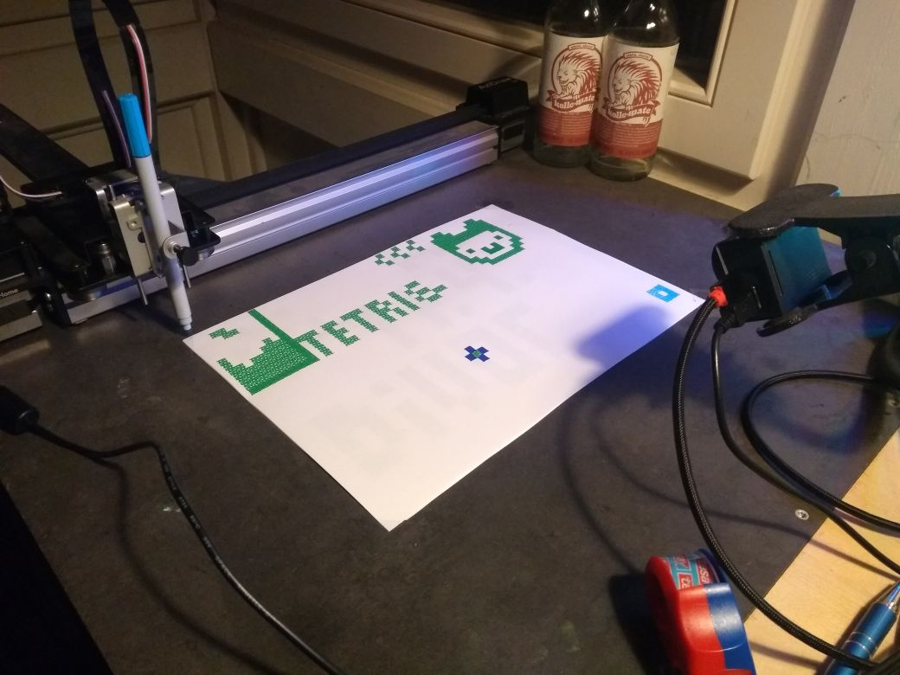

Welcome to Plotterflut, my "homeassembly" during divoc 2020.

To see it in action, you have to join the jitsi meeting where I have set up a camera pointing to the plotter.
https://jitsi.linux.it/PlotterFlut
The drawing area is divided into 104x69 squares, you can fill each square with a given intensity between 0 and 7, using the following URL:
https://team-tfm.com/plotterflut/api
Send your data as a GET-request with the following arguments: "x", "y", "intensity".
If your request takes a while to get an answer the plotter is most probably executing your command, responding with status 200 after it has finished.
If something went wrong you should get an answer immediately.
If the plotter is currently busy with another command, the response status code is 409.
If something went wrong (arguments out of bounds, field already drawn, parse errors), it answers with status code 402. Refer to the reponse text for details.
You might also get 503 when exceeding the rate limit (5req/s).
There is also an endpoint which returns all already drawn fields:
https://team-tfm.com/plotterflut/data
With the following form you can try it:
Or you can use the new fancy interface (select intensity to the right, then click on the grid):
Find the hidden feature to block empty fields. UTSL!
I may or may not improve something over the weekend.
nilo